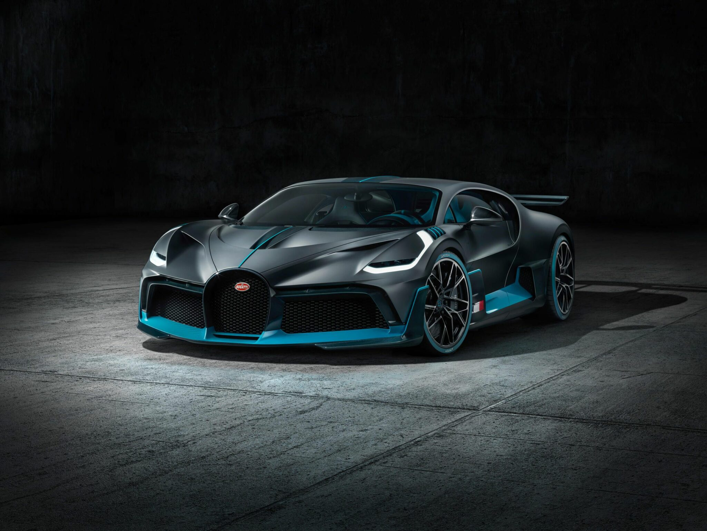

Галерея BUGATTI

W16 Mistral
The 8-litre W16 from the Veyron, after two decades of service, finds it final resting place in the Mistral model line. Using the full power specification, that of 1,600 PS, it is attached to a bespoke for the Mistral 7-speed dual-clutch transmission, and promises to firmly plant its flag on the hypercar landscape before riding off over the horizon to retirement.

Droptail
A modern interpretation of the roadster body style, Droptail represents the next chapter of
Rolls-Royce Coachbuild. Only four expressions of the motor car will ever be made, each the result of remarkable collaborations between Coachbuild artisans and ambitious, visionary clients. The first commission, Rolls-Royce La Rose Noire Droptail, embodies the allure of the Black Baccara rose.

Divo
The new Bugatti Divo concept was recently unveiled on August 24, 2018, at ‘The Quail – a Motorsport Gathering’ event taking place in Monterey, California. Three very important things to note about the car: purchasing one will cost $5.8 Million USD, only 40 are being produced, and they’re already sold out.